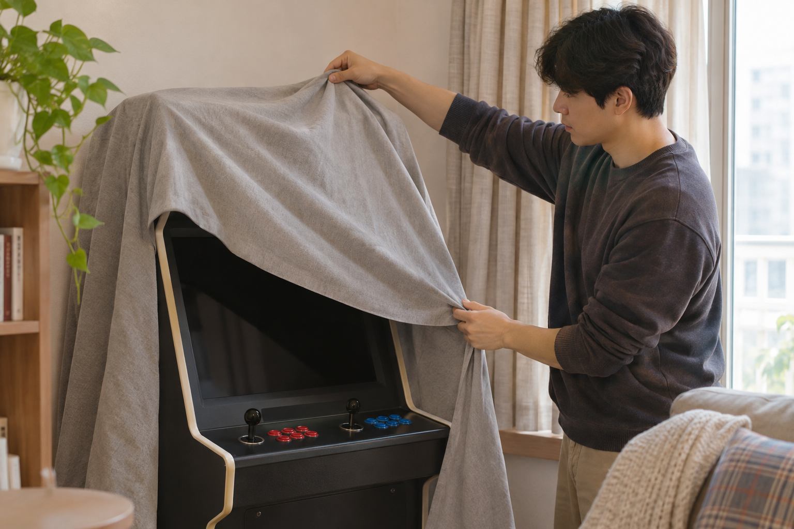
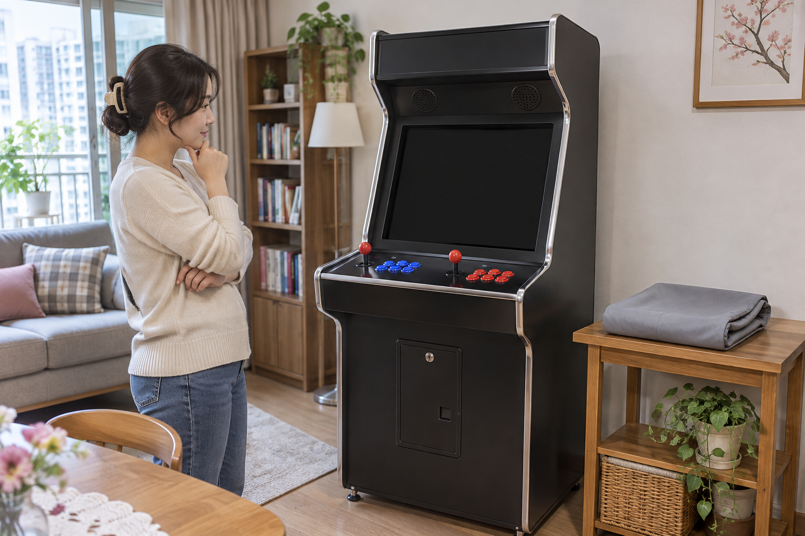

가정용 오락기 먼지 덮개는 전원을 끄고 본체가 식은 뒤, 한동안 사용하지 않을 때 씌우세요. 다시 게임을 시작할 때는 덮개를 완전히 벗기고 본체와 덮개에 물기가 없는지 살펴보세요. 제품에 덮개나 보관 방법이 따로 안내되어 있다면 그 지침을 우선하세요.

전원을 끄고 본체가 식은 뒤 덮기
게임을 마친 뒤에는 제품 안내에 따라 전원을 끄세요. 방금 사용한 기기는 바로 덮지 말고 본체가 식을 때까지 기다리세요. 청소 직후라면 표면과 덮개가 모두 마른 상태인지 확인하세요.
먼지 덮개는 오락기 전원이 꺼지고 본체가 식었으며 표면에 물기가 없을 때 씌우세요.
오락기 형태에 맞는 덮개 고르기
노리박스 제품 목록에는 신형HX 20+ 테이블형과 신형HX 32+ 스탠드형이 각각 안내되어 있습니다. 테이블형은 상판과 양쪽 조작부를, 스탠드형은 본체 높이와 돌출된 조이스틱까지 살펴보세요. 덮개를 고를 때는 가장 넓은 부분을 재고, 천이 조이스틱이나 버튼을 누르거나 바닥에 끌리지 않는지 확인하세요.
오락기 먼지 덮개의 크기는 본체 폭과 높이뿐 아니라 조이스틱이 돌출된 부분까지 고려해 정하세요.
오래 사용하지 않을 계획이라면 가정용 오락기 장기 보관 방법도 참고하세요.

덮개를 완전히 벗긴 뒤 다시 켜기
덮개를 접어 별도 위치에 두고 통풍구나 조작부에 천이 남아 있지 않은지 살펴보세요. 먼지가 보이면 전원을 켜기 전에 오락기 화면과 조작부 청소 방법을 참고해 제품 안내에 맞게 정리하세요. 본체나 연결부에 물기가 보이면 사용을 미루고 판매자에게 확인하세요.
오락기를 다시 켜기 전에는 먼지 덮개를 완전히 벗기고 통풍구와 연결부의 상태를 확인하세요.
- 덮개를 모두 벗겨 별도 위치에 두기
- 통풍구와 조작부 주변에 남은 천이나 먼지 확인하기
- 본체와 연결부에 물기가 없는지 확인하기
노리박스 오락실게임기의 설치 형태는 제품자세히보기에서 확인할 수 있습니다.